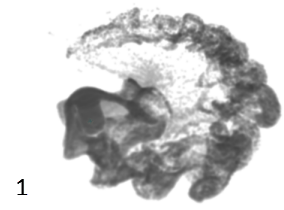
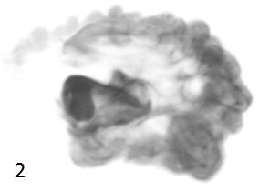

可以在 bifrostAeroProperties 属性中找到“粒子密度”(Particle Density)属性。
-
翻转(Flip)
- 控制用于计算模拟的粒子数。每个体素的粒子数是该值的立方。例如，如果指定 2，则每个体素的粒子数为 8 (23 = 8)。请勿使用小于 1.0 的值。
-
渲染(Render)
- 控制每渲染体素的渲染粒子数。渲染粒子不直接进行模拟，而是用于显示和渲染，并由使用 FLIP 粒子计算的模拟平流传递。通过使用较高的渲染粒子计数，可以在仍使用较粗糙的模拟的同时获得更多的可视细节。对于“翻转粒子密度”(FLIP Particle Density)，每个体素的粒子数是此处输入的值的立方。请勿使用小于 1.0 的值。
- 减少流噪波(Reduce Flow Noise)
-
提高 Aero 体素渲染的平滑度。当烟在过大的体积展开，导致粒子采样不足时，这是最有效的。
应该只为最终过程激活该选项，而不是在尝试使用模拟设置时。因为这样做会大大增加粒子数。此外，它只会影响渲染粒子，而不影响 FLIP 粒子。

- 禁用“减少流噪波”(Reduce Flow Noise)。
- 启用“减少流噪波”(Reduce Flow Noise)。